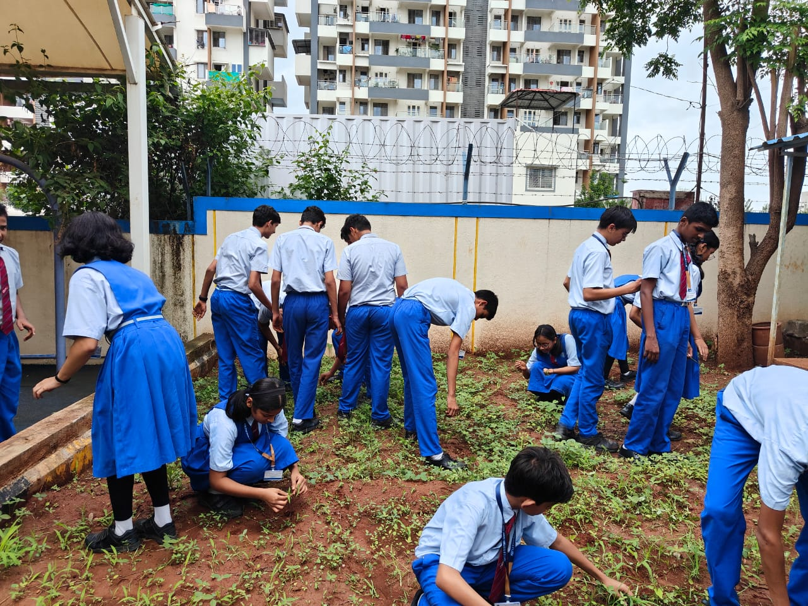
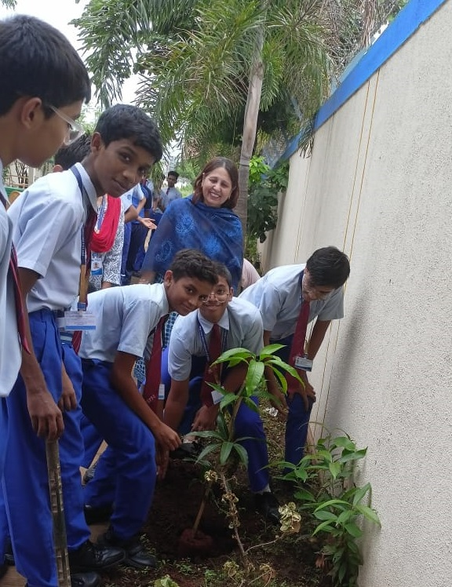
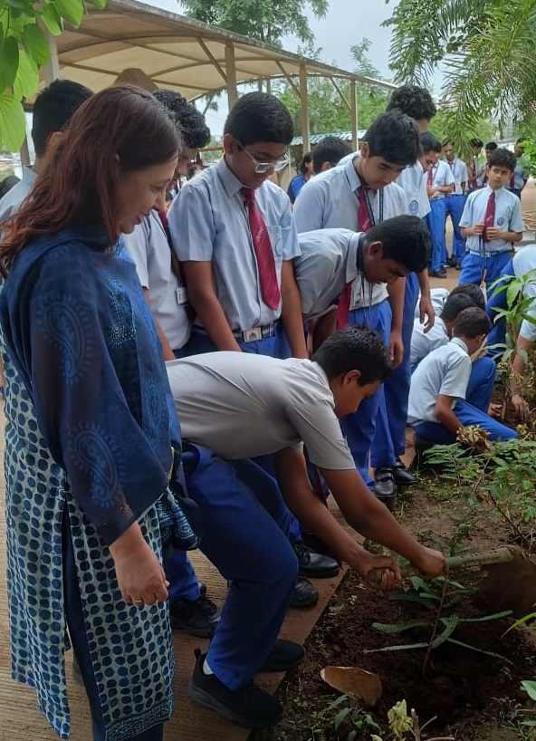
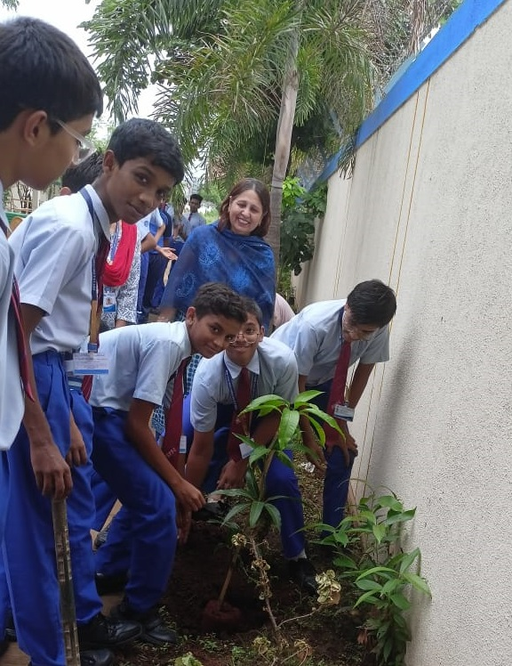
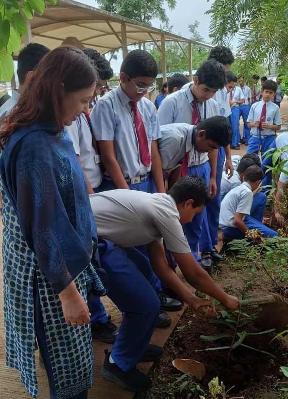

Welcome to LeafShade
Welcome to LeafShade
Nurture the Nature
Trees are the lungs of our planet, providing us with the vital oxygen we need to live. They not only offer shade and beauty but also play a crucial role in combating climate change and supporting biodiversity. As we plant, protect, and celebrate trees, we foster healthier communities and richer ecosystems. Together, let us strive to cherish and nurture our natural world for future generations.
-
Climate Guardians
-
Biodiversity Boosters
-
Cooling Agents
-
Beauty Enhancer


Rise Your Hand to Preserve Trees
How Should We Work Differently to keep The Trees Safe
-
Save Nature
To secure a future where nature thrives, we must adopt sustainable practices and promote meaningful conservation efforts.
Read More -
Tree Plantation
×Tree Plantation
Tree plantation is very necessary because trees provide oxygen to the environment and make the air quality better. If more trees are planted, then the world's environment will become a safer place to live in. Tree plantation also reduces pollution, making this world a safe and secure place for the future generations.
Even at S. B. Patil Public School, we have conducted many tree plantation events to engage students and the community in protecting the environment. These initiatives have enhanced our campus and has promoted awareness about the importance of trees.

Planting trees in is an effective and common way to contribute to biodiversity and enhance environmental health.
Read More -
Tree Free Products
Using tree free products made from materials like bamboo, hemp or agricultural waste helps saving trees and reduce environmental impact.
Read More -
Educate & Advocate
It helps people understand the value of trees and nature and encourages actions to protect them, which can reduce deforestation.
View Images
“ Trees are earth's endless effort to speak to the listening heaven
Rabindranath Tagore

 Events & Programs
Events & Programs

Events and Programs held in SBPPS
-
View Event
Event 1
Eco-brick making
×Eco-Brick making in SBPPS


By containing plastics within a plastic bottle, ecobricks are designed to reduce the amount of plastic exposed to the elements and thus reduce the harmful effects of plastic degradation
-
View Event
Event 2
Bioenzymes
Bio-enzyme can be used to wash bathrooms, clean toilet bowls, to remove salt scales on bathroom fittings, to wipe floors, tiles, glass, mirrors, to whiten the laundry, to clean kitchen grease, to clean hobs & chimney, to clean the vessels and as a fertilizer for plants.
-
View Event
Event 3
Rally of Abhiyan
SBPPS conducted a rally in which we spread information about the importance of trees and the need for their conservation.
-
View Event
Event 4
Tree Plantation
×Tree Plantation in SBPPS
 



Tree Plantation drives combat many environmental issues like deforestation, erosion of soil, desertification in semi-arid areas, global warming and hence enhancing the beauty and balance of the environment. Trees absorb harmful gases and emit oxygen resulting in an increase in oxygen supply.